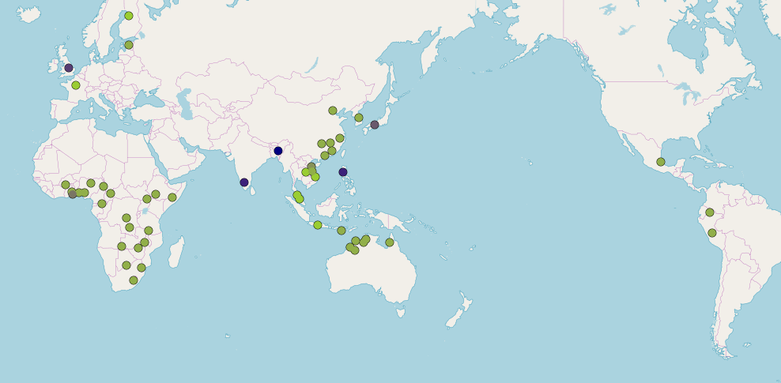

library(tidyverse)
library(lingtypology)
library(kableExtra)
#Goal
The goal for this short update is to use the R package lingtypology (click here for the tutorial), in order to create a map that shows which for which languages we use which terminology relating to ideophones.
Now, I know that the data isn’t complete yet. It is an ongoing cataloguing project. You can find the more recent versions of this map on my Github account.
Load packages
Read in the data
The data below is divided into three columns:
language: the language name found in the Glottolog database1.terminology: the terminology used to refer to ideophones in descriptions of the phenomenon across different languages.popup: What I want to appear in the frames when you click on a given language. In this case that would be a reference to some research, or the names used for the phenomenon in the language itself.
df <- read_csv("https://raw.githubusercontent.com/simazhi/ideophones/master/terminology_map/terminology_map.csv")
df %>%
kable("html") %>%
kable_styling(bootstrap_options = c("striped", "hover"))| language | terminology | popup |
|---|---|---|
| Semai | expressive | Diffloth (1976); (Tufvesson 2011) |
| Bahnar | expressive | Diffloth (1994) |
| Kedah Malay | expressive | Collins (1979) |
| Lao | expressive | Crisfield (1983); Waylang (1996) |
| Indonesian | expressive | Carr (1966) |
| Somali | ideophone | Dhoorre & Tosco (1998) |
| Yoruba | ideophone | Rowlands (1970) <br> specific adverbs (Vidal 1852) |
| Kisi | ideophone | Childs (1988) |
| Zulu | ideophone | Doke (1935) ; Msimang & Poulos (2001) <br> radical descriptives (Doke 1927) |
| Gbaya-Bossangoa | ideophone | Samarin (1965); Noss (2001); Roulon-Doko 2001) |
| Hausa | ideophone | Newman (1968) <br> specific intensifying adverbs (Spezifische Verstärkungsadverbien) (Prietze 1908) |
| Siwu | ideophone | Dingemanse (2011) |
| Korean | ideophone | You (1991); Lee (1992) <br> 의성어 [uiseong-eo]; 의태 [uitae]; 의정어 [uijeong-eo] |
| Asheninka Perene | ideophone | Mihas (2012) |
| Japanese | mimetic | Kita (1993; 1997); Lu (2006); Akita (2009); Kita (1997); Mester & Itō (1989); Rodrigues (1604) <br> オノマトペ・擬音語・擬態語・擬情語 [onomatope; giongo; gitaigo; gijōgo] “onomatopeia; phonomime; phenomime; psychomime” |
| French | expressive | Grammont (1901) <br> expressive (mots expressifs) |
| Northern Pastaza Quichua | ideophone | Nuckolls (1992; 1996; 2004; 2017) |
| Ewe | other | Westermann (1905: 1907); Schlegel (1857); Ameka (2001) <br> sound pictures (Lautbilder); intensity and frequency adverbs (Intensitäts- und Frequenzadverbien) |
| Shona | ideophone | Fortune (1962); Klassen (1999) |
| Southern Sotho | ideophone | Kunene (1965) |
| Kota (India) | onomatopoeia | Emeneau (1969) <br> onomatopoetics |
| Vietnamese | impressif | Durand (1961) |
| Khasi | other | Henderson (1965) <br> phonaesthetic words |
| Pacoh | ideophone | Watson (1966) |
| Yir-Yoront | ideophone | Alpher (1994; 2001) |
| Nyanja | ideophone | Kulemeka (1994) (lang: Chichewa); 1996; 1997) |
| Wolaytta | ideophone | Amha (2001) |
| Tswana | ideophone | Creissels (2001) |
| Emai-Iuleha-Ora | ideophone | Egbokhare (2001); Schaefer (2001) |
| Mundang | ideophone | Elders (2001) |
| Finnish | expressive | Jarva (2001); Mikone (2001) |
| Didinga | ideophone | de Jong (2001) |
| Luba-Katanga | ideophone | Kabuta (2001) |
| Baka (Cameroon) | ideophone | Kilian-Hatz (2001) |
| Kxoe | ideophone | Kilian-Hatz (2001) |
| Kambera | ideophone | Klamer (1998; 2000) |
| Warrwa | ideophone | McGregor (2001) |
| Gooniyandi | ideophone | McGregor (2001) |
| Kwini | ideophone | McGregor (2001) |
| Estonian | ideophone | Mikone (2001) |
| Iloko | onomatopoeia | Rubino (2001) <br> onomatopoetics |
| Jaminjung | ideophone | Schultze-Berndt (2001) |
| Tetela | ideophone | Tassa (2001) |
| Kamu | ideophone | Svantesson (1983) |
| Mandarin Chinese | ideophone | Mok (2001); Zhao (2008); Zhang (1999); Yao (2004); Lu (2006); Li (2007); Meng (2012); Van Hoey (2015; 2017) <br> 象聲詞 [xiangshengci] “onomatope” <br> 擬聲詞·擬態詞·擬請詞 [nishengci; nitaici; niqingci] “phonomime; phenomime; psychomime” |
| Yue Chinese | ideophone | Mok (2001); Bodomo (2006); de Sousa (2008) <br> 象聲詞 [xiangshengci] “onomatope” <br> 擬聲詞·擬態詞·擬請詞 [nishengci; nitaici; niqingci] “phonomime; phenomime; psychomime” |
| Central Dagaare | ideophone | Bodomo (2006) |
| Hakka Chinese | ideophone | Mok (2001); Bodomo (2006); de Sousa (2008); Wu (2015) <br> 象聲詞 [xiangshengci] “onomatope” <br> 擬聲詞·擬態詞·擬請詞 [nishengci; nitaici; niqingci] “phonomime; phenomime; psychomime” |
| Xiang Chinese | ideophone | Wu (2015) <br> 象聲詞 [xiangshengci] “onomatope” <br> 擬聲詞·擬態詞·擬請詞 [nishengci; nitaici; niqingci] “phonomime; phenomime; psychomime” |
| Gan Chinese | ideophone | Wu (2015) <br> 象聲詞 [xiangshengci] “onomatope” <br> 擬聲詞·擬態詞·擬請詞 [nishengci; nitaici; niqingci] “phonomime; phenomime; psychomime” |
| Wu Chinese | ideophone | Wu (2015) <br> 象聲詞 [xiangshengci] “onomatope” <br> 擬聲詞·擬態詞·擬請詞 [nishengci; nitaici; niqingci] “phonomime; phenomime; psychomime” |
| Upper Necaxa Totonac | ideophone | Beck (2008) |
| English | onomatopoeia | Sapir (1929); Bolinger (1950); Bloomfield (1953); Marchand (1983); Magnus (2001); etc. |
| Adangme | other | Christaller (1888) <br> descriptive adverbs |
| Ila | other | Smith (1920) <br> echoisms |
| Bangi | onomatopoeia | Whitehead (1899) <br> indeclinable adjectives |
| Xhosa | onomatopoeia | McLaren (1906) <br> indeclinable verbal particles |
| Elamite | onomatopoeia | Winkler-Breslau (1907) <br> Sound figures (Klangfiguren) |
| Basque | ideophone | Urtel (1917); Ibarretxe-Antuñano (2017); Schuchardt (1919) <br> onomatopoeia; ideophones; sound words (Schallwörter) |
| Myene | onomatopoeia | Wilson (1847) <br> (onomatopoeic) interjections |
| Lithuanian | onomatopoeia | Leskien (1902) <br> sound imitations (Schallnachahmungen) |
| Kanembu | other | (Prietze 1908) <br> specific intensifying adverbs (Spezifische Verstärkungsadverbien) |
Plot the terminology map
Next we plot the map, which can then be explored. Click on a dot and you should see the same data we put in the table above.
map.feature(languages = df$language,
features = df$terminology,
popup = df$popup,
color= c("yellowgreen", "navy"),
#shape = TRUE
label = df$language
)Warning: Language Indonesian is absent in our version of the Glottolog database. Did you mean Micronesian, Indonesian Sign, Indonesian Bajau, Peranakan Indonesian, Standard Indonesian, Basilectal Colloquial Jakarta Indonesian, Riau Indonesian, Acrolectal Colloquial Jakarta Indonesian, Standard Malay-Indonesian?Warning: Language Asheninka Perene is absent in our version of the Glottolog database. Did you mean Ashéninka Perené?Warning: Language Bangi is absent in our version of the Glottolog database. Did you mean Ubangi, Banai, Pangi, Bandi, Bangri, Banggi, Mbangi, Baangi, Langi, Bangui, Bangni, Banga, Banti, Dangi, Tangi, Bang, Bobangi-based pidgin, Ngiri Riverain Ubangi-Interieur, Ngiri Riverain Ubangi-Ripuaire, Bobangi-Bangala-Lingala, Bobangi-Nunu?Warning: Language Indonesian is absent in our version of the Glottolog database. Did you mean Micronesian, Indonesian Sign, Indonesian Bajau, Peranakan Indonesian, Standard Indonesian, Basilectal Colloquial Jakarta Indonesian, Riau Indonesian, Acrolectal Colloquial Jakarta Indonesian, Standard Malay-Indonesian?Warning: Language Asheninka Perene is absent in our version of the Glottolog database. Did you mean Ashéninka Perené?Warning: Language Bangi is absent in our version of the Glottolog database. Did you mean Ubangi, Banai, Pangi, Bandi, Bangri, Banggi, Mbangi, Baangi, Langi, Bangui, Bangni, Banga, Banti, Dangi, Tangi, Bang, Bobangi-based pidgin, Ngiri Riverain Ubangi-Interieur, Ngiri Riverain Ubangi-Ripuaire, Bobangi-Bangala-Lingala, Bobangi-Nunu?Warning: Language Indonesian is absent in our version of the Glottolog database. Did you mean Micronesian, Indonesian Sign, Indonesian Bajau, Peranakan Indonesian, Standard Indonesian, Basilectal Colloquial Jakarta Indonesian, Riau Indonesian, Acrolectal Colloquial Jakarta Indonesian, Standard Malay-Indonesian?Warning: Language Asheninka Perene is absent in our version of the Glottolog database. Did you mean Ashéninka Perené?Warning: Language Bangi is absent in our version of the Glottolog database. Did you mean Ubangi, Banai, Pangi, Bandi, Bangri, Banggi, Mbangi, Baangi, Langi, Bangui, Bangni, Banga, Banti, Dangi, Tangi, Bang, Bobangi-based pidgin, Ngiri Riverain Ubangi-Interieur, Ngiri Riverain Ubangi-Ripuaire, Bobangi-Bangala-Lingala, Bobangi-Nunu?Warning: There is no coordinates for languages Indonesian, Asheninka Perene,
Bangitl; dr
So with a simple script and some data we can use the lingtypology package to quickly map language-related data. We can see how ideophone is used more for African languages, expressive for Southeast Asian ones, and mimetic for Japanese. Of these ideophone is recently becoming the global cover term — although what that precisely means, often still has to be explained at the language-particular level. Cool!
References
Dingemanse, Mark. 2011. The meaning and use of ideophones in Siwu. Nijmegen: Radboud University Nijmegen dissertation.
Kwon, Nahyun. 2015. The natural motivation of sound symbolism. Brisbane: University of Queensland PhD dissertation.
Moroz G (2017). lingtypology: easy mapping for Linguistic Typology. <URL: https://CRAN.R-project.org/package=lingtypology>.
Voeltz, Erhard Friedrich Karl & Christa Kilian-Hatz (eds.). 2001. Ideophones. (Typological Studies in Language v. 44). Amsterdam; Philadelphia: J. Benjamins.
Footnotes
Although maybe it is an adapted form, see the documentation for the R package ‘lingtypology’.↩︎